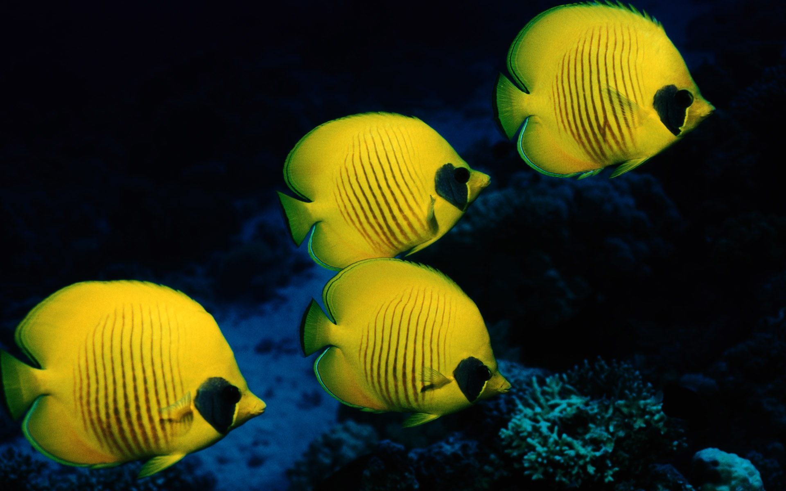

ปลาเทวดา

ปลาเทวดา (Angel fish) ชื่อสามัญเรียกชื่อปลาน้ำจืดในสกุล Pterophyllum ในวงศ์ปลาหมอสี (Cichlidae) มีรูปร่างโดยรวมเป็นรูปสี่เหลี่ยมรูปว่าว ลำตัวแบนข้างมาก มีปากขนาดเล็ก
ครีบหลังเป็นกระโดงสูงอยู่ค่อนไปทางด้านหาง ครีบหลังบานยาวออกมาจากลำตัว ครีบท้องมีอยู่หนึ่งคู่เรียวเล็กและปลายชี้แหลม
ทั้งนี้ ปลาเทวดา มีถิ่นกำเนิดดั้งเดิมที่อเมริกาใต้ แถบลุ่มน้ำโอริโนโก ลุ่มน้ำอเมซอน และลุ่มแม่น้ำใกล้เคียง โดย ปลาเทวดา นิยมอยู่เป็นฝูงในถิ่นที่มีพืชพรรณไม้น้ำขึ้นหนาแน่น และสภาพน้ำมีความเป็นกรดประมาณ 5-5.5
ลักษณะทั่วไป
ปลาเทวดา เป็นปลาแบนข้าง ลำตัวกว้างลึก ครีบหลังเป็นกระโดงสูงอยู่ค่อนไปทางด้านหาง ครีบด้านท้องก็ทำนองเดียวกัน ครีบหางแบนเป็นแพนใหญ่
รูปทรงเป็นสามเหลี่ยมมุมฉากริมฝีปากค่อนข้างเล็กดวงตากลมโต ปลาเทวดามีหลายสี ตามสายพันธุ์แตกต่างกันออกไป เช่น เทวดาดำ เทวดาหินอ่อน เทวดาขาว เป็นต้น
อุปนิสัยของปลาเทวดา
ปลาเทวดา เป็นปลาที่แปลก บางครั้งก็เป็นปลารักสงบ ชอบอยู่นิ่ง ๆ ไม่ตื่นตกใจง่าย แต่ในทางตรงกันข้าม บางครั้ง ปลาเทวดา ก็มีนิสัยก้าวร้าว หวาดระแวงขี้ตื่นตกใจ
ปลาเทวดา บางตัวเลี้ยงให้คุ้นเคยได้ง่าย แต่บางตัวคุ้นเคยยาก ไม่ยอมกินอาหารและเป็นปลาที่ค่อนข้างใจเสาะ เสียชีวิตง่าย ถ้าการดูแลเอาใจใส่ไม่ดี ถ้าน้ำในตู้เสียและผิดปกติไป
ปลาเทวดา ก็จะแสดงอาการไม่ปกติทันที
การดูแล เลี้ยงดูปลาเทวดา
โดยทั่วไป ปลาเทวดา เป็นปลารักสงบ พอจะปล่อยเลี้ยงรวมกันหลาย ๆ ตัวได้ในตู้กระจกที่กว้างขวางพอ และมีพันธุ์ไม้เป็นที่หลบอาศัยบ้าง ปลาเทวดา เมื่อจับคู่กัน
แม่จะวางไข่ติดกับวัสดุในน้ำ เช่น ใบไม้ รากไม้ หรือแผ่นหิน สำหรับอาหารที่ให้ได้แก่ ไรน้ำ ลูกน้ำ เนื้อกุ้งสับ และอาหารเม็ดสำเร็จรูป เป็นต้น